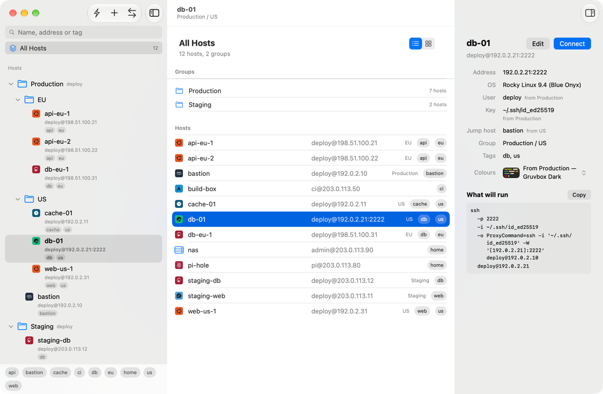

Free and open-source · for macOS 26
Every machine you SSH into, in one window.
Shellhand keeps your hosts in a list you file into groups and find by tag, opens each session as a tab on the system's own ssh, and moves files over SFTP. It is a native Mac app, written in Swift all the way down.

Real ssh
It runs the ssh you already have.
Every session is /usr/bin/ssh on a pty, so your config, your agent and your keys behave exactly as they do in Terminal. Shellhand writes the command line from your list, and shows you what will run before it does.
A jump chain is spelled out hop by hop, each with its own port, user and key, as a nested ProxyCommand.
ssh -p 2222 -i '~/.ssh/id_ed25519' \ -o "ProxyCommand=ssh -i '~/.ssh/id_ed25519' -W '[192.0.2.21]:2222' deploy@192.0.2.10" \ deploy@192.0.2.21Groups and tags
File hosts into groups. Settings come down.
A host takes its own value first, then the nearest group above it that sets one. Groups pass down the user, the key, the jump host, ssh options, agent forwarding and the terminal's colours — so production need not look like staging.
Tags cut across the tree and narrow together: web and eu asks for the European web servers.
The whole list exports as plain YAML for your dotfiles. It names things rather than carrying ids, and holds no secrets: an identity is a path to a key, never the key.
# Shellhand host list. Fold it into another machine with File ▸ Import.# Records match by name, so ids differing between machines does not matter.# No secrets here: identity is a path to a key, never the key.
version: 1
groups:
- name: Production
user: deploy
identity: ~/.ssh/id_ed25519
theme: Gruvbox Dark
- name: US
parent: Production
jump: bastion
hosts:
- name: bastion
addr: 192.0.2.10
group: Production
tags: [bastion]
- name: db-01
addr: 192.0.2.21
port: 2222
group: US
tags: [db, us]Everything around the session.
-
tabs
A terminal you can live in
Tabs take the keys every Mac app gives them, ⇧⌘] and ⌃⇥ among them, and a menu of their own. Any monospaced font you have, Nerd Fonts included; 10,000 lines of history to search in every tab; and Option types what your keyboard puts on it, or acts as Meta if you ask.
-
⌘K
Connect to anything
Type a name from your list, or any
user@host:port,[v6]:portorssh://link, and press return. A machine reached that way is not added to your list. -
sftp
Files beside the terminal
SFTP opens in a window of its own, this Mac on the left and the host on the right. Transfers queue a couple at a time rather than fighting over one connection, and nothing already there is replaced without asking.
-
/etc/os-release
It knows what it is talking to
When you connect, Shellhand logs in a second time, without a prompt, to read the host's own
/etc/os-release, and draws its system's mark. It asks again once a day; a switch in Settings turns the asking off. -
~/.ssh/config
It reads your ssh config for you
A host whose name your config points at a different machine is flagged as such, and one your config routes through a bastion says so, instead of claiming it goes straight there.
-
import
Bring the list you have
Import from OpenSSH's own
~/.ssh/config, a CSV, or Shellhand's YAML, with a preview of exactly what will change first. A fresh install offers the machines already in your ssh config.
Install
macOS 26 or later. One universal build, signed and notarized, that keeps itself up to date.
Homebrew
brew tap cuonggt/tap
brew trust --cask cuonggt/tap/shellhand
brew install --cask shellhandThe brew trust line is Homebrew's own: since Homebrew 7, a cask from a tap outside Homebrew's own has to be trusted once before it will load. Read the cask first if you would rather see what you are trusting — it carries no install scripts at all.
Build it yourself
The source is all there, under the GPL: xcodegen generate, then open the project. The README says what building without the project's own signing certificate takes.
Questions
What does it cost?
Nothing. Shellhand is free and open-source, under the GNU GPL, version 3 or later: no trial, no account and no licence key.
Does it keep my passwords?
No, and it does not answer a password prompt for you. A host that takes only a password still opens in a tab — ssh asks in the terminal and you type it, exactly as in Terminal — but the SFTP window needs a key or an agent to log in.
What does it send, and where?
Nothing but your own ssh connections, and its check for updates, which goes to GitHub. There is no analytics, and no account to make.
Where is my list kept?
On your Mac, in a SQLite database under ~/Library/Application Support/Shellhand/. File ▸ Export… writes the whole list out as YAML whenever you like.
Which Macs does it run on?
Any Mac on macOS 26 or later, Apple silicon or Intel: the build is universal.
Where are port forwarding, snippets and key management?
They were built, then taken out so that the core could be made solid first. If you need one back, say so in Discussions: a request from someone who would use it is what brings a feature back.
Something is wrong. Where do I say?
Help ▸ Report a Problem… in the app opens an issue with your version already filled in. Issues are public, so leave out host names, addresses and keys. Questions and ideas go to Discussions, and a security problem to a private report.
Try it on your own list.
A fresh install offers the machines already in your ~/.ssh/config, so there is nothing to type in.